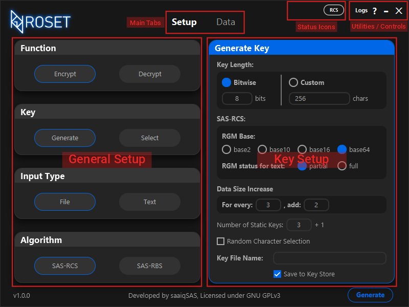

1. User Interface
by: saaiqSAS
Last Updated: 13/2/2025
In this section, we will explore the core layout of the ROS Encryption Tool,
highlighting its key features and providing a step-by-step guide to help you
navigate through its main sections for a seamless and efficient experience.
Below, in Fig.1.1, you can view the overall layout of the tool.
 Fig.1.1
Key Setup Section
Fig.1.1 shows the layout of the Setup tab in the tool.
However, the Key Setup section within the Setup tab has two different
layouts, which change depending on the option selected under Key in the
General Setup section—either Generate or Select.
Fig.1.2 shows the layout of the Key Setup section when Generate
is selected, while Fig.1.3 shows the layout when Select is chosen.
Fig.1.2
Fig.1.3
Please note that the Key Store shown in Fig.1.3 will be
empty by default and will populate as you save generated keys to it.
Data Tab
The Data tab is where you can manage inputs and outputs, whether they are
files or text. The layout of the Data tab will adjust based on the
Input Type option (File / Text) selected in the Setup tab.
Fig.1.4
Above, in Fig.1.4, you can see the layout of the Data tab when
File is selected. In this case, on the left side, under the Input
section, there is a table that displays the files or directories you choose to process.
You can also drag and drop files or directories into the table for added convenience.
On the right side, you’ll find two sections: Output Directory and
Process Settings. The Output Directory is where you can select or
drag and drop the directory/folder where you want the processed (Encrypted / Decrypted)
copies of the input files to be saved. Under Process Settings, you can adjust
settings that may help reduce processing time.
Fig.1.5
In Fig.1.5, you can see the layout of the Data tab when
Text is selected. This layout is quite simple. On the left side,
under the Input section, there is a text input area where you can
type or paste the text you wish to process. On the right side, under Output,
the processed text will be displayed.
Please note that text processing only supports the SAS-RCS encryption algorithm,
whereas file processing supports both the SAS-RCS and SAS-RBS encryption algorithms.
Status Icons, Utitlities and Controls
Below, Fig.1.6 shows all the icons and buttons located in the top bar.
Fig.1.6
'X' button: This is the close button for the tool. Clicking it will terminate all processes and close the tool without any warning.
'-' button: This is the minimize button for the tool.
'?' button: This is the Help button for the tool. If your platform supports it, clicking
this button will open your browser and take you to the official ROS Encryption Tool documentation.
'Logs' button: This will open a new window displaying logs.
'RCS' icon: This icon indicates the currently selected algorithm under the Algorithm
section of the Setup tab.
'Key' icon: This icon appears when a key is extracted to memory.
'Thunder Bolt' icon: This icon appears when Quick Processing is enabled. Quick Processing
is activated when you click the Process button in the Data tab after enabling the Quick Processing option in
the Process Settings section. By default, this option is enabled.